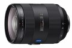
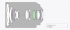
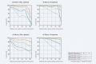

器材库 > 35mm画幅AF变焦镜头 > Vario-Sonnar T* 24-70/2.8 ZA SSM II

详细规格
镜头类型
标准变焦镜头
发布日期
2015-04-24
厂家推荐价格
12,799.00 （人民币）
焦距
24mm-70mm
最大光圈
f/2.8
最小光圈
f/22
视角（对角）
约84°-34°
镜头结构
17片/13组
非球面镜片
2片
低/超低色散镜片
2片
光圈叶片
9片
最近对焦距离
约34cm
最大放大倍率
约0.25倍
驱动马达
SSM
滤镜口径
77mm
镜头卡口
Minolta/Konica-Minolta/Sony AF
防抖
否
颜色
黑色
尺寸
约83×111mm
重量
约974g
备注
防尘防滴设计
该产品暂无存档的网友点评
产品图 / 样片
Vario-Sonnar T* 24-70/2.8 ZA SSM II

Vario-Sonnar T* 24-70/2.8 ZA SSM II

Vario-Sonnar T* 24-70/2.8 ZA SSM II